Redonulis mod is a mod that adds 1 new structure and 2 new mobs to Minecraft. The main mob is the boss called Redonulis who inhabits the nether.
Redonulis’s temple is located in the Nether and is where you will find Redonulis residing. The Temple has a couple of different rooms. There is the throne room, treasury, smithy, training room, prison, sacrifice room and cribs. In most of these rooms, you can find hidden loot. 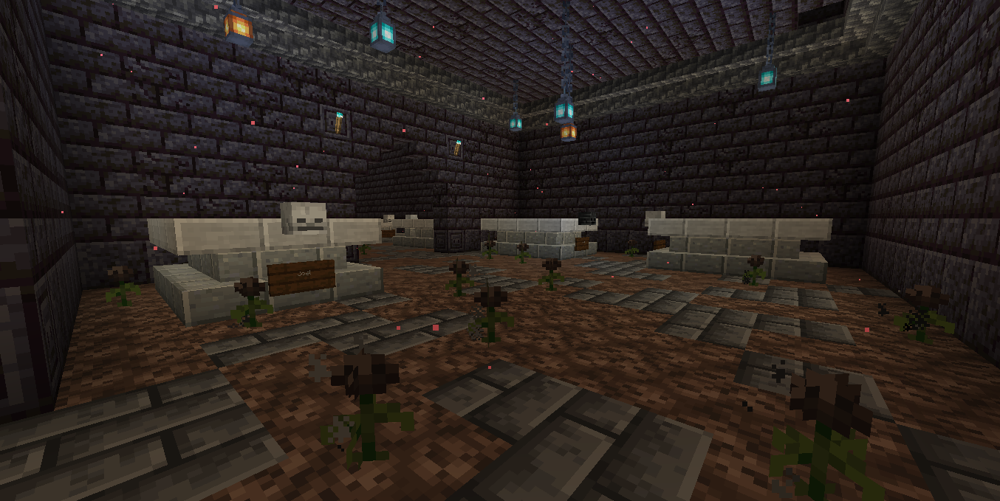 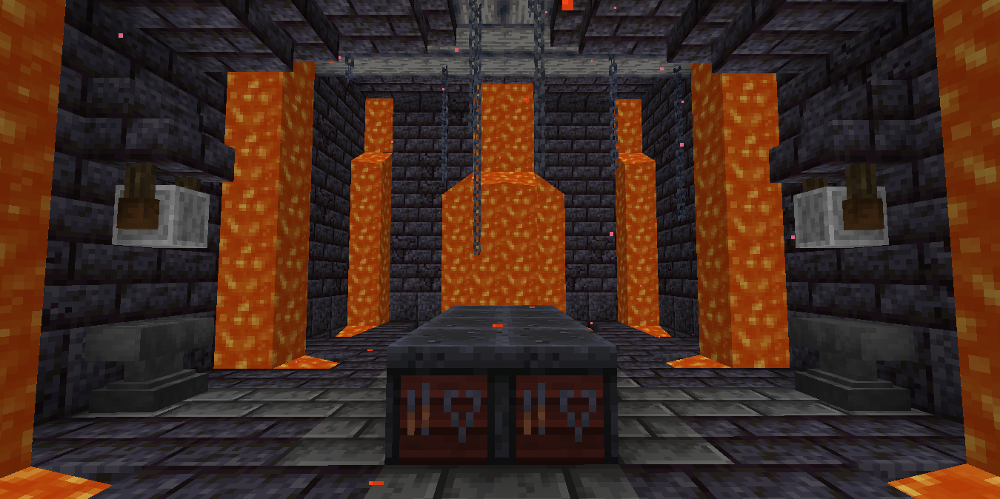 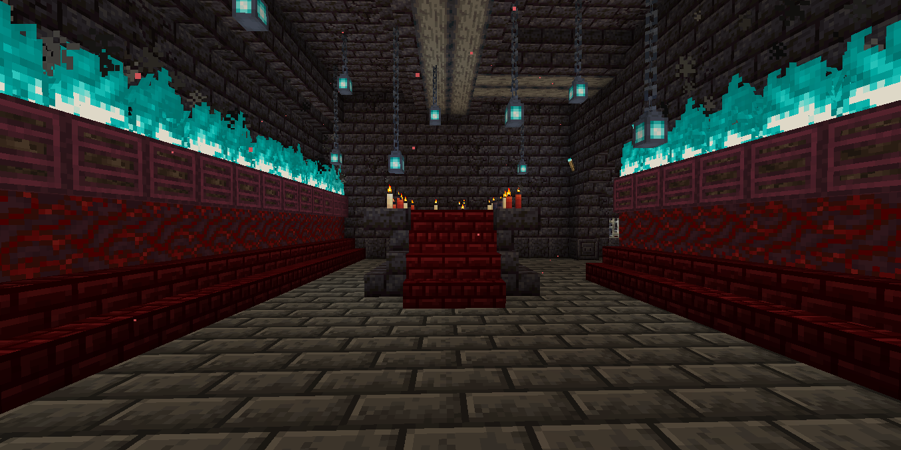 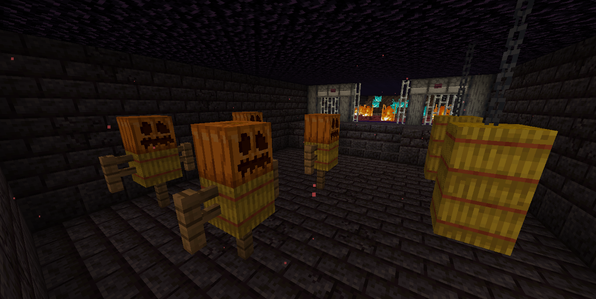
Redonulis is the name of the boss in our mod. He will spawn in the new structure/temple that was also added by the Redonulis mod. You can find him in the throne room of his temple. He has 3 different attack animations and can summon minions to help him fight. Redonulis has 250 health and is impervious to arrows and fire. When killed he will drop 2 items 1 of them is a horn. 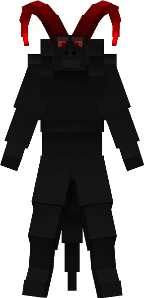 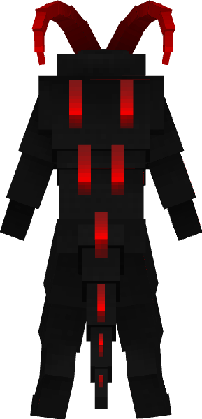 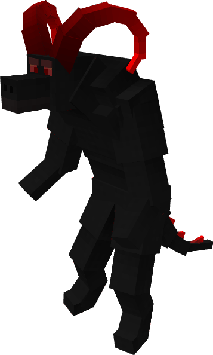
Redonulis can summon Fire Hounds that will help him fight. The Fire Hounds are immune to fire and are rather fast but don't have a lot of health. When killed they have a chance to drop an item. The Fire Hounds can also be summoned by the play by combining the time drop by the Fire Hounds with the item dropped upon Redonulis’s death. Once summoned by the player they will help fight. 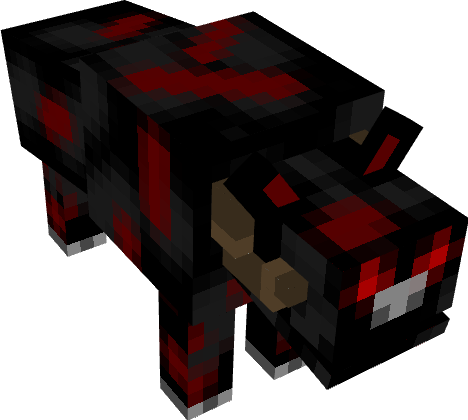 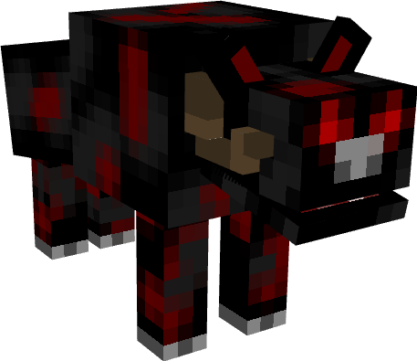 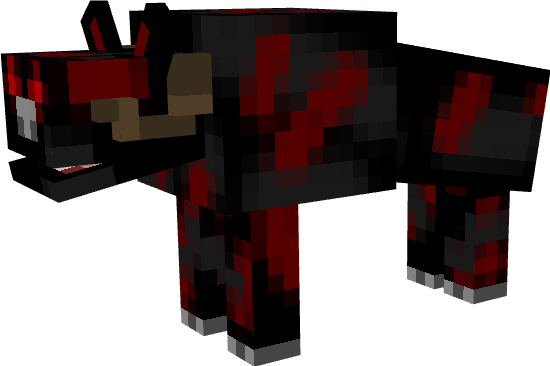 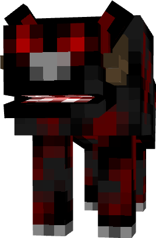